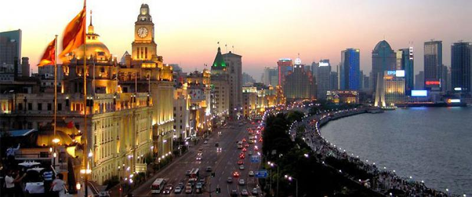
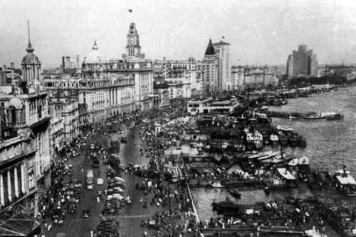
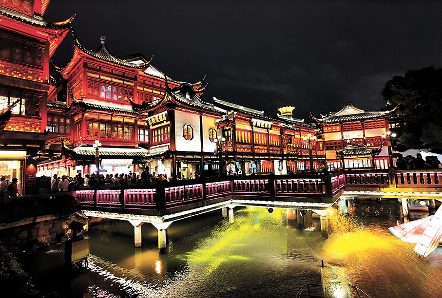
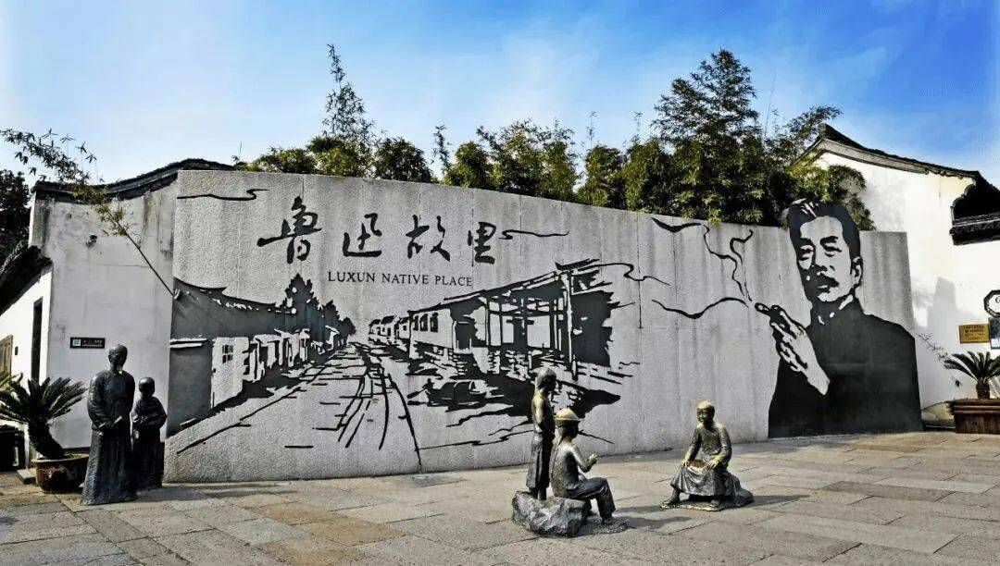
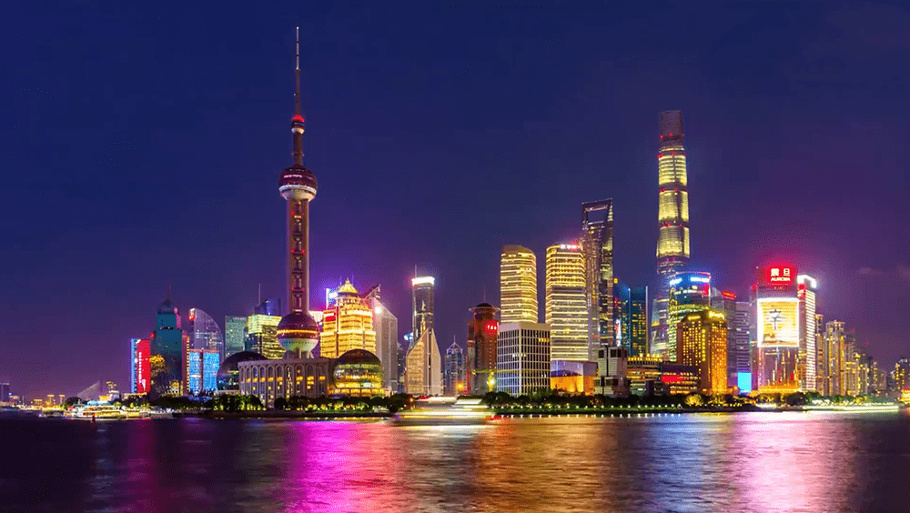

About Shanghai
Shanghai, China's largest city, is known for its dazzling skyline, historical landmarks, and rich cultural heritage. From traditional Jiangnan architecture to futuristic skyscrapers, Shanghai offers something for everyone.
Explore Shanghai





The Bund - Modern View
Explore Shanghai’s modern transformation with a visit to the iconic Bund. A perfect spot to enjoy the vibrant skyline at night.
Recommended Routes
Historical Tour
Visit Yu Garden, the Bund, and the French Concession for a glimpse of Shanghai’s historical charm.
Modern Skyline Tour
Explore Lujiazui, Shanghai Tower, and Oriental Pearl Tower for breathtaking views of the city.
Shanghai Cuisine
Savor local delicacies such as Xiaolongbao (soup dumplings), Shengjianbao (pan-fried buns), and more at traditional markets and renowned restaurants.
Upcoming Events
- Shanghai Film Festival - June 2024
- Mid-Autumn Lantern Festival - September 2024
- Shanghai Marathon - November 2024